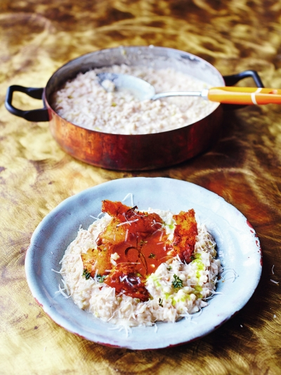

Turkey Risotto

Ingredients
Instructions
-
Place any leftover turkey skin from the bottom of the carcass into a cold casserole pan, then put it on a medium heat so the fat naturally renders out and it becomes super-crisp, like crackling, turning halfway. When it’s golden, strip in the thyme leaves to crisp up for just 10 seconds, then scoop the crispy skin and thyme on to a plate, keeping the pan of flavoursome fat to one side.
Peel the onion, wash the leek and trim with the celery, then finely chop it all. Return the pan of fat to a medium heat, then add the veg and fry for 10 minutes, or until soft but not coloured, stirring occasionally, and adding a splash of oil, if needed. Pour the stock into a separate pan and bring to a simmer on a low heat. Stir the rice into the veg for a couple of minutes, then pour in the Prosecco. Let it cook away, then start adding the stock, a ladleful at a time, letting each one cook away before adding more. Keep a close eye on it and stir constantly for 17 minutes, or until the rice is cooked but still retains its shape. Meanwhile, finely chop the turkey meat, stirring it into the pan halfway through the 17 minutes. Reheat your gravy, then sieve it into a pre-warmed jug ready to pour at the table.
When the risotto is done, add enough extra stock to make it oozy, then remove from the heat. Finely grate over most of the Parmesan and beat it in with the butter and mascarpone, then taste and season to perfection. Put the lid on and take to the table. Divide between your hot plates, make a well in the middle of each portion and flamboyantly pour in the hot gravy, then crack and crumble the crispy skin and thyme over the top. Finish with a tiny extra grating of Parmesan, and a thimble of new season’s extra virgin olive oil, if you’ve got it.
Comments